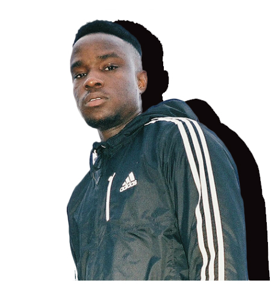

WHO?
For the majority who are unfamiliar with ODIE, let me be the one to introduce you to this gem. Spending most of his childhood in Toronto and now living in San Diego, the 21-year old singer is currently on the rise and I hope it never stops. His music is a breath of fresh air that draws inspiration from Kid Cudi and Coldplay. On top of that, inspirations equally derive from his family, hardships as an immigrant and his Nigerian roots are clearly apparent. ODIES music advocates for self-improvement and enlightenment of self as he believes this is an important part of living. Using music as an outlet for expressing his feelings and thoughts – claiming in an interview that “I’m most alive when I’m able to express myself.” A beautiful soul who’s music is captivating and moving – expressing his most vulnerable moments shamelessly.
WHAT?
Analogue was ODIES debut project of 2018, a statement piece that focused on his maturity of music and transparency with his fans.
A project that deserves a listen all the way through – giving a warm, diverse, and impressive new listening experience.
Analogue is an immersive 10-track project which combines r&b production and ODIES vocals who sounds similar to frank oceans.
The project features ambient melodic tracks such as, “Northface” and “Little Lies” while bringing its fair share of up-tempo beat bouncing heaters like “Story” and “Faith”.
Additionally, his purposeful lyrics and suave melodies make this project the perfect chiller for any day of the week.
A listening experience that is truly different and I’m not the only one who’s in love with his sound.
According to Spotify ODIE has 647,534 monthly listeners along with 5 songs (Little lies, Northface, Bliss City, In my Head, and Story) reaching over a million plays each.
Looking at these stats only make me hopeful for his bright future and showcases his reach across the world.
Whether you like it or not, ODIE is here to stay and I'm certain 2019 will be ever a better year for him.
WHY?

Calling Odie my favorite artist is an understatement. Music and I have always had a tricky relationship. Because my taste in music is so wide and board which makes it hard to befixated on one artist, let alone find a favorite. Discovering music that speaks to you both in music taste and personal connection is a challenge that I’ve encountered for years. Until I started listening to ODIE. Of course, I like his angelic voice which creates catchy melodies and his unique r&b production but his message behind the songs is what brings me back every time. Lyrics about finding your soulmate, creating your own legacy, making your family proud, and counting your blessings – are a few of his musical thematic I wholeheartedly connect with. And in retrospect, that is the goal of music and its creation. Music is a medium that can be expressed so uniquely that when you find a connection with it - it impacts you deeply. The connection is deeper than the satisfying production or catchy chorus. Whether that connection manifest in making you self-aware of your own issues or filling you with such joy and vigor that you start to dance, not caring that anyone is watching. These powerful emotions are what makes music memorable and therapeutic. And ODIES music is just that for me – an artist whose music never disappoints, my go-to when feeling sad, happy, angry, and all the above. Music that challenges and captures my imagination so much that I start to physically feel the lyrics he’s saying or the beat that is behind them. It's amazing finding an artist whose music affects you past the artificial barrier which you hear it from. It’s a nice change of pace really, and makes me forever grateful for finding ODIE music.
Reflection
Websites are multifaceted machines, they can do it all – combining video, audio, text, interactivity, and hypertext to develop your narrative. The options to communicate your message are endless and expansive, which is why I decided to code a website for my digital artifact. A website allows me a certain specificity of communication depending on how I use the elements at my disposal. Knowing that a website is heavily dependent on its visual mode – I utilized many images and graphics to enhance the experience of my storytelling. To preface, a visual mode is a type of modality that websites have. According to the reading Multimodality, “Reading”, and “Writing” for the 21st-century visual mode is the use of elements like images, color, and texture to help express details, represent feelings, persuade, entertain, and persuade the user. Which is a huge component in a website and serves to set up the story. For instance, when building this website, I used photos with ODIE being more candid and lively rather than posed to create a feeling of living in the moment. Grain was also added to the photos to emphasize the retro aesthetic that I was going for. Additionally, I used colors that complemented each other and its surrounding elements – the intent was to evoke a feeling of cohesiveness and uniform – colors that clash together gives way for distraction, disorganization, and uneasiness. Linguistically – I chose the heading typography to help me push the ambiance I was going for. For the heading typography, I chose a decorative outline font because it reminded me of old movie posters and further solidify the theme of vintage. Also, this typography was great because of the subtle loudness that it had, not decorative enough to grab all your attention and not simple enough to be boring – but just the perfect balance of attention seeking.
After finishing the project, I realized how much story building you can create when combining all these modes together. It really can alter your intended message, depending on how you use it.
To conclude, this coding project showed me the power of modes within a website and how modes can change the interpretation of the message you’re trying to convey.